Veremos un resumen de todos los métodos que hemos visto incluyendo Knn y Naive Bayes. Tened en cuenta que es un método de clasificación multiclase con más de 2 niveles.
Cargamos librerías
library(ggplot2)library(ggpubr)library(dplyr)
Attaching package: 'dplyr'
The following objects are masked from 'package:stats':
filter, lag
The following objects are masked from 'package:base':
intersect, setdiff, setequal, union
library(glmnet) ## regresiones logisitcas
Loading required package: Matrix
Loaded glmnet 4.1-7
library(caret) ### bayes y knn
Loading required package: lattice
library(e1071) ## bayes
Cargamos datos
# quitamos la primera columnadatos <-read.table("./yeast.data",header = F)[,-1]
Creamos las funciones que vamos a necesitar, es decir las funciones de transformación
Using clase as id variables
Using clase as id variables
Using clase as id variables
Using clase as id variables
Using clase as id variables
Using clase as id variables
Podemos ver la cabecera de alguna transfomacion para ver el nombre nuevo de las variables
head(datos.melt$zscore)
clase variable value
1 MIT Var1 0.58178524
2 MIT Var1 -0.51071851
3 MIT Var1 1.01878674
4 NUC Var1 0.58178524
5 MIT Var1 -0.58355209
6 CYT Var1 0.07195016
for(l in1:length(datos.melt)){ X <- datos.melt[[l]] nombre <-names(datos.melt)[l] lista_graficos[[l]] <-ggplot(X,aes(y=value,fill=clase))+geom_boxplot()+ggtitle(nombre)+xlab("")+ylab("")}names(lista_graficos) <-paste0("plot",1:length(datos.lista))lista_graficos$plot1
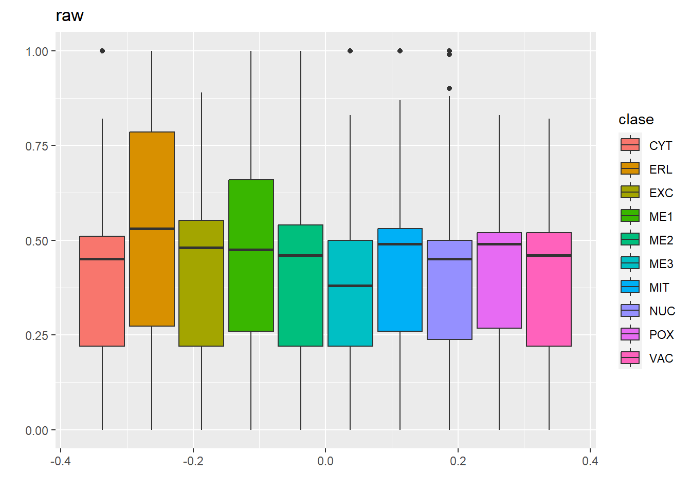
lista_graficos$plot2
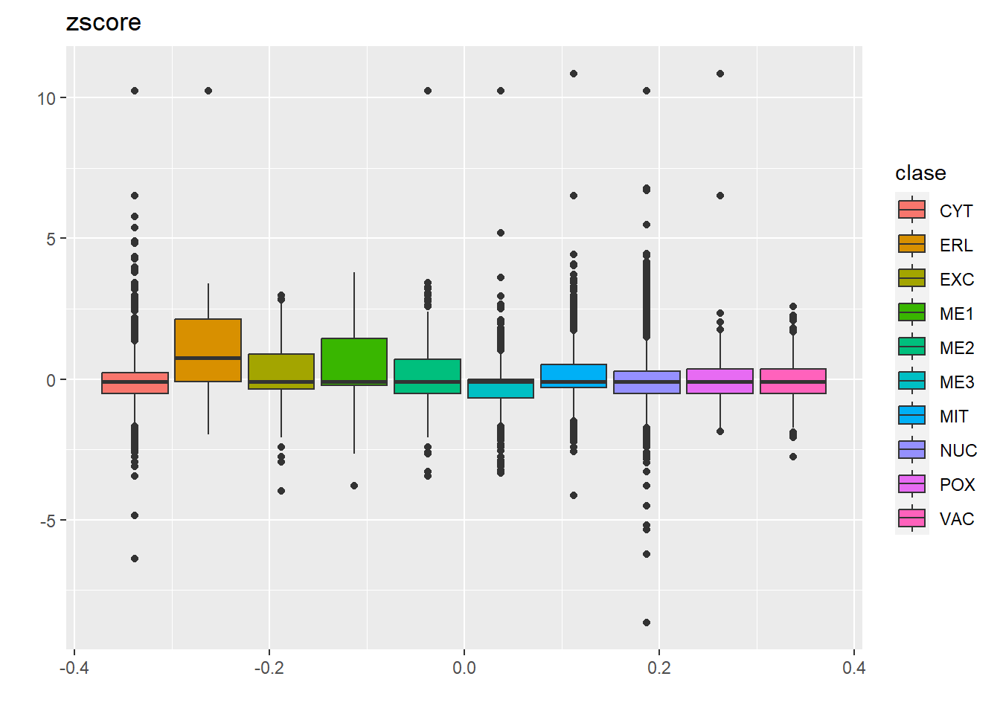
lista_graficos$plot3
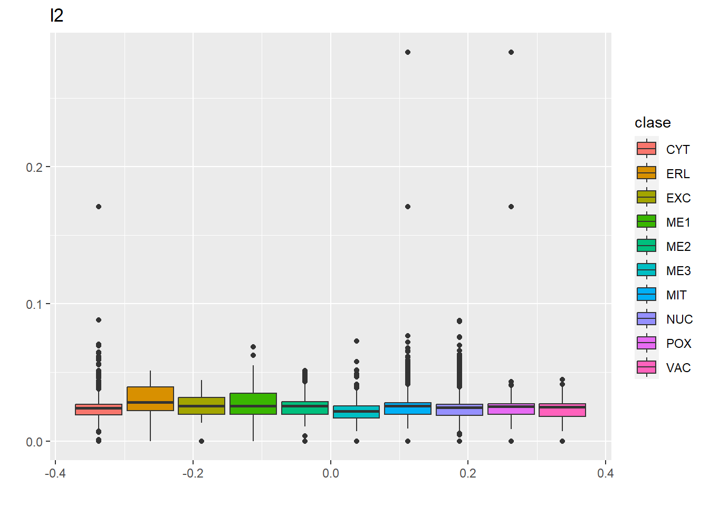
lista_graficos$plot4
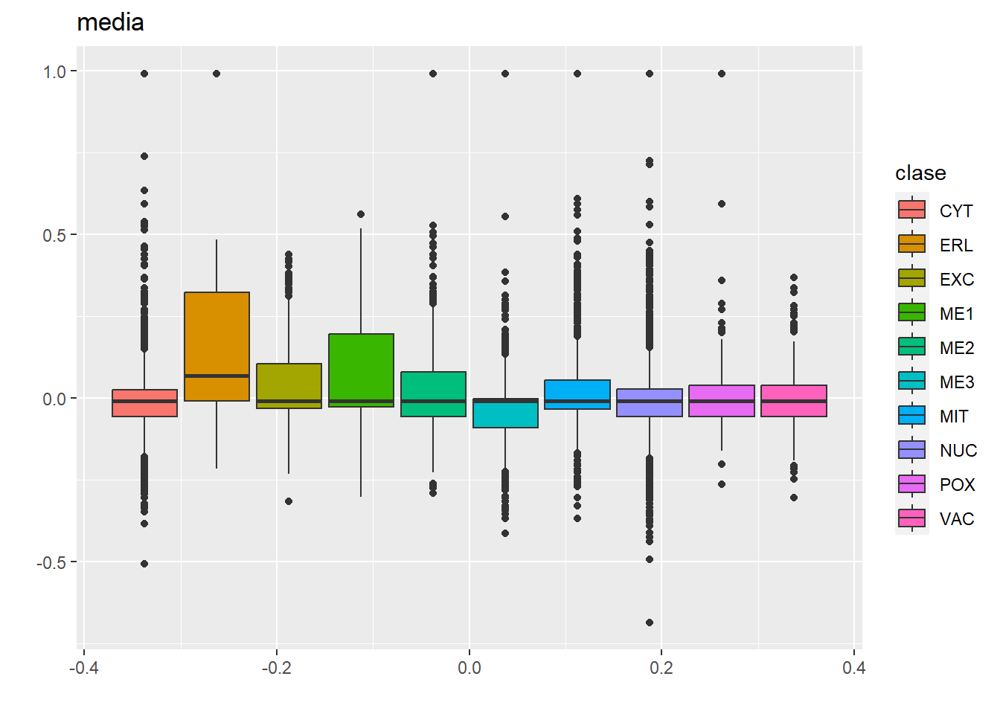
lista_graficos$plot5
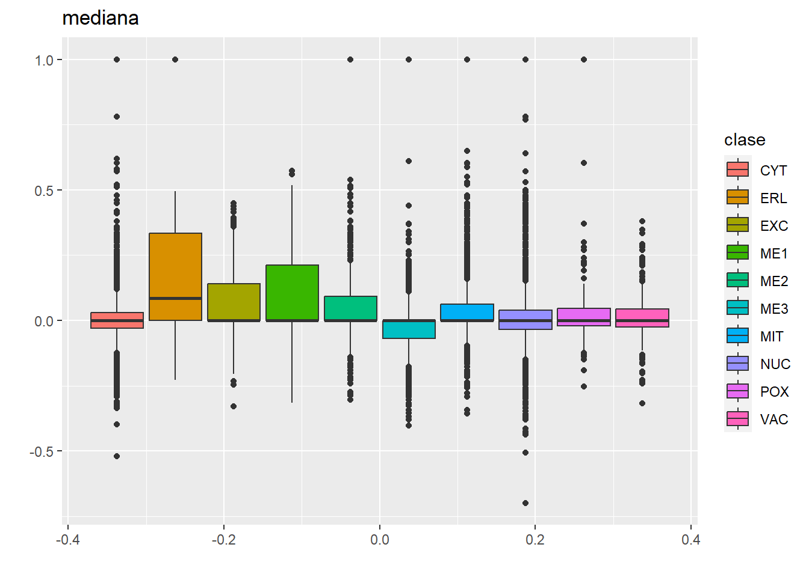
lista_graficos$plot6
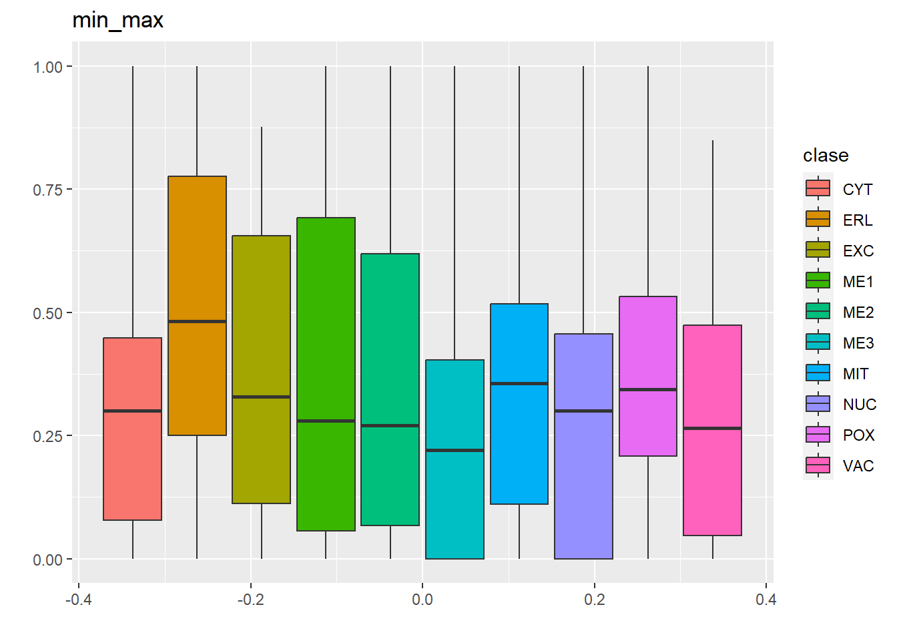
Así por ejemplo la normalización min-max es la mejor, puesto que no tenemos outliers
Otra forma de ver la transfomración es mediante gráficos de densidad
for(l in1:length(datos.melt)){ X <- datos.melt[[l]] nombre <-names(datos.melt)[l] lista_graficos[[l]] <-ggplot(X,aes(x=value))+geom_density()+ggtitle(nombre)+xlab("")+ylab("")}names(lista_graficos) <-paste0("plot",1:length(datos.lista))lista_graficos$plot1
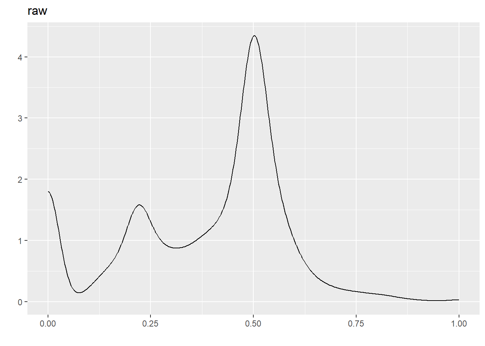
lista_graficos$plot2
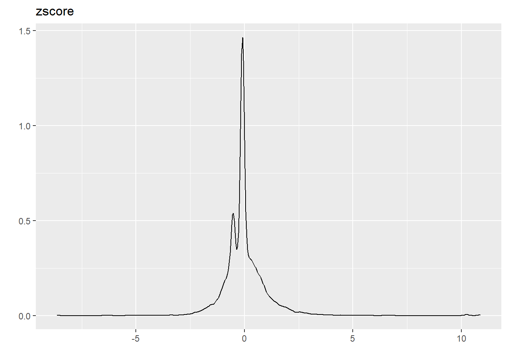
lista_graficos$plot3
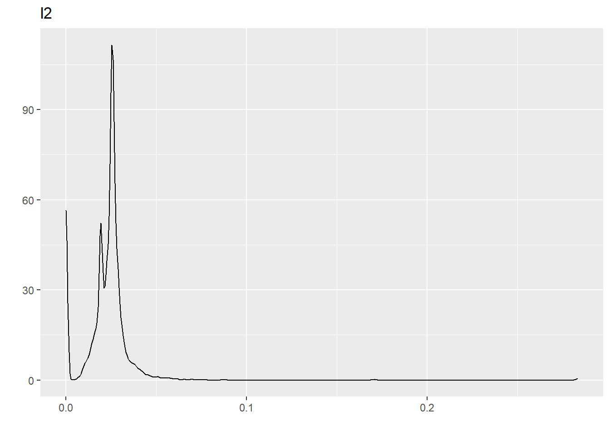
lista_graficos$plot4
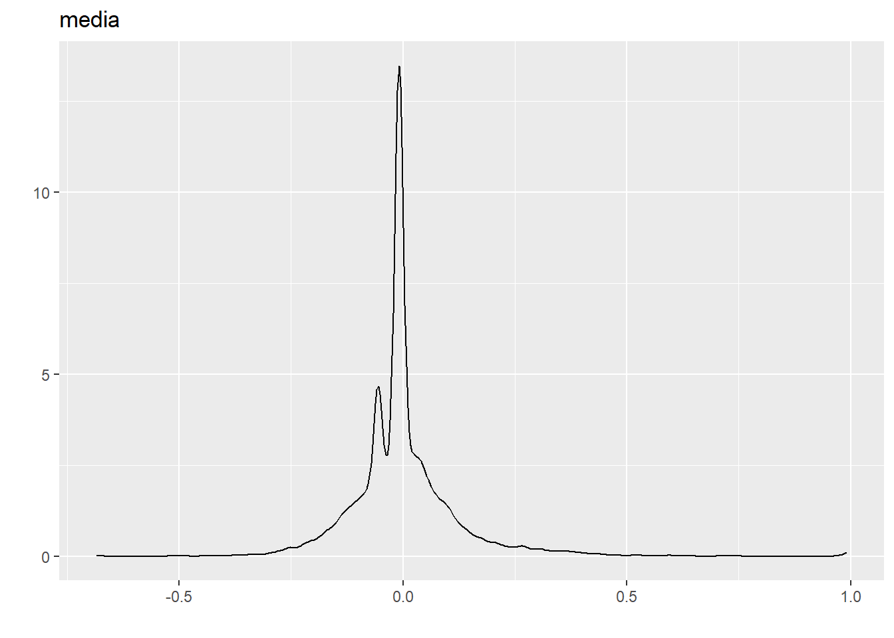
lista_graficos$plot5
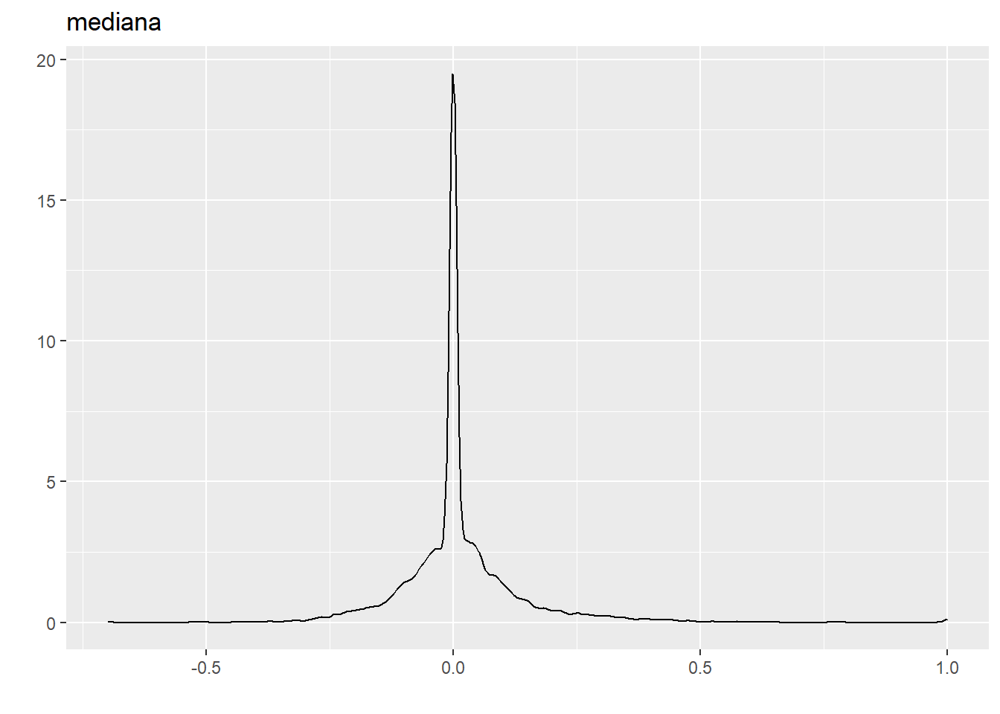
lista_graficos$plot6
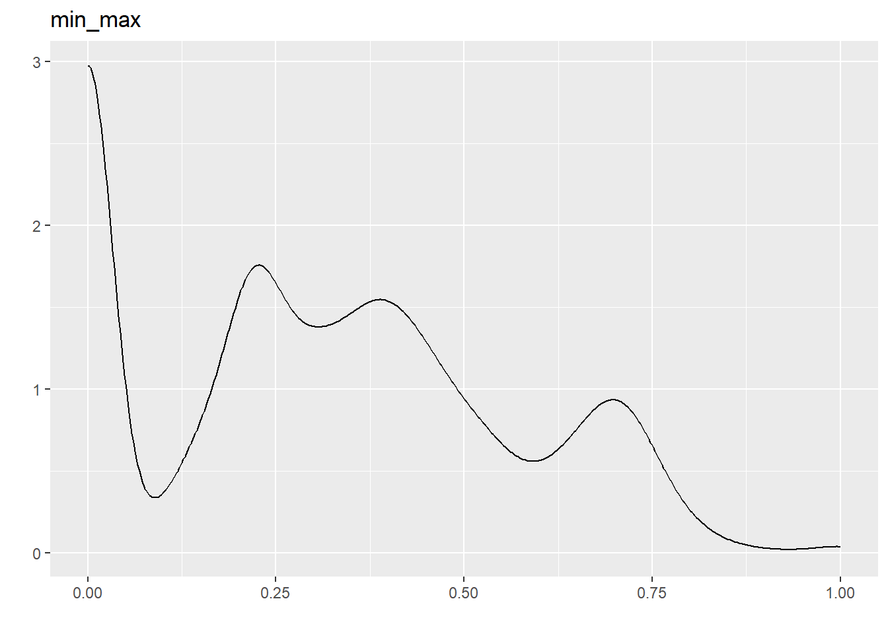
Sin embargo, al ver la densidad, no tenemos una transformacion uniforme.
NOTA: PODEMOS CREAR LA PARTICIÓN CON caret o a mano, el 70 porciento de los datos. A mano sería
set.seed(123456789)n <-nrow(datos)idx <-sample(1:n,n*0.7)### para conjunto de datos podemos realizar el splitdatos.train.lista <-lapply(datos.lista, function(x) x[idx,])datos.test.lista <-lapply(datos.lista, function(x) x[-idx,])
#cv es metodo de controlset.seed(13102001) #Se necesita una semillatrControl <-trainControl(method ='cv',number =5)myfnlog <-function(x) train(clase ~ ., data = x, method ="multinom", trControl = trControl, trace = F)#multinom se pone para varios datoslogistica.lista <-lapply(datos.train.lista,myfnlog)#Se aplica a los datos de entrenamientologisita.pred <-vector("list",length =length(datos.lista))#Se crea un vector del tamaño del vector listafor(l in1:length(datos.lista)){ logisita.pred[[l]] <-predict(logistica.lista[[l]],datos.test.lista[[l]])}#Se llena el for desde el primer valor hasta el numero total de los datos listanames(logisita.pred) <-names(datos.lista)accuracy.regresion <-vector("numeric",length =length(datos.lista))for(l in1:length(datos.lista)){ accuracy.regresion[l] <-confusionMatrix(datos.test.lista$raw$clase,logisita.pred[[l]])$overall[1]}names(accuracy.regresion) <-names(datos.lista)### Este valor lo tienen que guardar solamente haremos por accuracy y kappa### tenemos que mirar el objeto matconfprint(accuracy.regresion)
raw zscore l2 media mediana min_max
0.5919283 0.5919283 0.5964126 0.5941704 0.5941704 0.5941704
Ridge
#cv es metodo de controllibrary(glmnet)set.seed(13102001) #Se necesita una semillatrControl <-trainControl(method ='cv',number =5)#entrenamiento de ridgemyfnridge <-function(x) train(clase ~ ., data = x, method ="glmnet", trControl = trControl, tuneGrid=expand.grid(alpha=0, lambda=seq(0,1,by=0.001)), trace = F)#bucle de listaridge.lista <-lapply(datos.train.lista,myfnridge)#Se aplica a los datos de entrenamientoridge.pred <-vector("list",length =length(datos.lista))#Se crea un vector del tamaño del vector lista de ridgefor(l in1:length(datos.lista)){ ridge.pred[[l]] <-predict(ridge.lista[[l]],datos.test.lista[[l]])}#Se llena el for desde el primer valor hasta el numero total de los datos listanames(ridge.pred) <-names(datos.lista)accuracy.ridge <-vector("numeric",length =length(datos.lista))for(l in1:length(datos.lista)){ accuracy.ridge[l] <-confusionMatrix(datos.test.lista$raw$clase,ridge.pred[[l]])$overall[1]}names(accuracy.ridge) <-names(datos.lista)### Este valor lo tienen que guardar solamente haremos por accuracy y kappa##print para visualizar datosprint(accuracy.ridge)
raw zscore l2 media mediana min_max
0.5919283 0.5941704 0.5896861 0.5919283 0.5896861 0.5941704
Lasso
#cv es metodo de controllibrary(glmnet)set.seed(13102001) #Se necesita una semillatrControl <-trainControl(method ='cv',number =5)#entrenamiento de ridgemyfnlasso <-function(x) train(clase ~ ., data = x, method ="glmnet", trControl = trControl, tuneGrid=expand.grid(alpha=1, lambda=seq(0,1,by=0.001)), trace = F)#bucle de listalasso.lista <-lapply(datos.train.lista,myfnlasso)#Se aplica a los datos de entrenamientolasso.pred <-vector("list",length =length(datos.lista))#Se crea un vector del tamaño del vector lista de ridgefor(l in1:length(datos.lista)){ lasso.pred[[l]] <-predict(lasso.lista[[l]],datos.test.lista[[l]])}#Se llena el for desde el primer valor hasta el numero total de los datos listanames(lasso.pred) <-names(datos.lista)accuracy.lasso <-vector("numeric",length =length(datos.lista))for(l in1:length(datos.lista)){ accuracy.lasso[l] <-confusionMatrix(datos.test.lista$raw$clase,lasso.pred[[l]])$overall[1]}names(accuracy.lasso) <-names(datos.lista)print(accuracy.lasso)
raw zscore l2 media mediana min_max
0.5964126 0.5941704 0.5986547 0.5964126 0.6008969 0.5986547
KNN
#cv es metodo de controlset.seed(13102001) #Se necesita una semillak_values=c(1:20) #valor de kCtrol <-trainControl(method ='repeatedcv',number =4, repeats =15)myfnknn <-function(x) train(clase ~ ., data = x, method ="knn", trControl = Ctrol, tuneGrid =data.frame(k=k_values))#método knnknn.lista <-lapply(datos.train.lista,myfnknn)#Se aplica a los datos de entrenamientoknn.pred <-vector("list",length =length(datos.lista))#Se crea un vector del tamaño del vector listafor(l in1:length(datos.lista)){ knn.pred[[l]] <-predict(knn.lista[[l]],datos.test.lista[[l]])}#Se llena el for desde el primer valor hasta el numero total de los datos listanames(knn.pred) <-names(datos.lista)accuracy.knn <-vector("numeric",length =length(datos.lista))for(l in1:length(datos.lista)){ accuracy.knn[l] <-confusionMatrix(datos.test.lista$raw$clase,knn.pred[[l]])$overall[1]}names(accuracy.knn) <-names(datos.lista)### Este valor lo tienen que guardar solamente haremos por accuracyprint(accuracy.knn)
raw zscore l2 media mediana min_max
0.6031390 0.5874439 0.5896861 0.5627803 0.5605381 0.5852018
Bayes
#cv es metodo de controlset.seed(13102001) #Se necesita una semillatrControl <-trainControl(method ='cv',number =5)myfnbayes <-function(x) train(clase ~ ., data = x, method ="naive_bayes", trControl = trControl)#multinom se cambia por naive_bayes bayes.lista <-lapply(datos.train.lista,myfnbayes)#Se aplica a los datos de entrenamientobayes.pred <-vector("list",length =length(datos.lista))#Se crea un vector del tamaño del vector listafor(l in1:length(datos.lista)){ bayes.pred[[l]] <-predict(bayes.lista[[l]],datos.test.lista[[l]])}#Se llena el for desde el primer valor hasta el numero total de los datos listanames(bayes.pred) <-names(datos.lista)accuracy.bayes <-vector("numeric",length =length(datos.lista))for(l in1:length(datos.lista)){ accuracy.bayes[l] <-confusionMatrix(datos.test.lista$raw$clase,bayes.pred[[l]])$overall[1]}names(accuracy.bayes) <-names(datos.lista)### Este valor lo tienen que guardar solamente haremos por accuracy y kappa### tenemos que mirar el objeto matconfprint(accuracy.bayes)
raw zscore l2 media mediana min_max
0.4080717 0.5336323 0.4596413 0.5336323 0.4125561 0.4125561